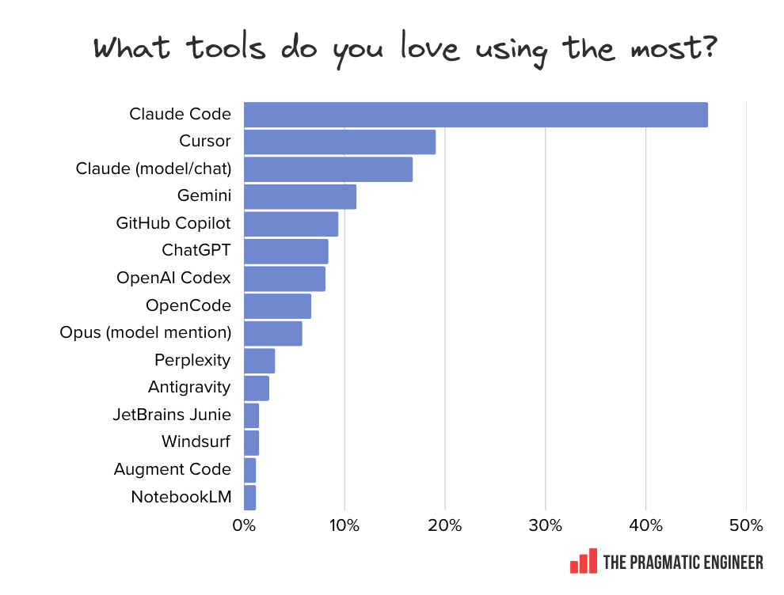

Minimising AI slop on Drupal projects.
Where this comes from
Over the last year I have been shipping client features with an AI agent, and this is the version I trust enough to put in front of real Drupal work.
One thing up front, so we are on the same page. This is not vibe coding, where you type a prompt, accept whatever comes back, and ship it.
Same agent, opposite discipline.
How we got here
The tools got genuinely good. What most teams are missing is not a better model. It is the workflow around it.
About the tool
It is what I use, and what these slides show on screen.
The workflow holds on Cursor, Copilot or Codex just the same. The commands and the ecosystem details just look different.
The Pragmatic Engineer 2026 AI tooling survey, around 1,000 responses.

The problem
You have seen most of these this week
Removed functions, wrong hook signatures, static calls everywhere. Trained on a decade of old Drupal.
Ignores your naming, base classes and BEM roots. Reverts to the average, not your project.
Config, abstractions and files you never asked for. Scope creep dressed up as being helpful.
The "fix: resolve dependencies" pull request. Reads beautifully, ships bugs.
Green in PHPUnit, broken in the browser. A Twig error, a missing field, a CSS regression.
Same task, a different result every time. Your corrections never stick.
None of this is the model being dumb. It is the model being unmanaged.
Why Drupal gets it worse
What it reaches for
// procedural, static, everywhere function mymodule_preprocess_node(&$vars) { $vars['out'] = \Drupal::service('renderer') ->renderRoot($build); \Drupal::database()->query($sql); }
What your project agreed
// injected, testable, yours final class NodePreprocessor { public function __construct( private readonly RendererInterface $renderer, private readonly Connection $database, ) {} }
Left alone, the agent drifts to the pattern it saw most across the internet. For Drupal that is a decade of procedural code and static calls. Your conventions are newer and rarer, so they are the first thing it forgets.
The whole talk in one line
Everything after this slide is that system. A handful of practices, and the tools that enforce them.
Give the agent a system and the slop has nowhere to go.
What the system is made of
Variable · non-deterministic
Skills
You stop sending raw prompts and send them through a skill instead. But a skill is written in English, so it steers the model. It does not guarantee the result.
Deterministic · proven
CI, linters, tests, coding standards
Boring, battle-tested, the same input and the same result every time. This is the floor the AI layer stands on, and the net that catches what it gets wrong.
No deterministic floor yet? That is the real gap. Fix it before you add AI.
Part one
The plan is the prompt.
The agent runs a planning wizard, drafts a spec, and I sign it off before a line is written. It happens in its own session, separate from the build.
Out of scope is the line that stops the agent adding things you never asked for.
# spec-testimonial-cards.md ## Goal One sentence. What this delivers for an editor. ## Acceptance criteria - Specific, testable. Behat givens where possible. ## In scope - What the agent may build. ## Out of scope - What it must not touch, even if it looks helpful. ## Open questions - [ ] Cleared before the ticket is cut.
The failing test is the contract.
A TDD skill drafts a Behat scenario from the spec. I review it, it goes red, and the agent's job is to make it green without touching the test.
A confident, wrong answer cannot pass a test you wrote first.
# tests/behat/features/testimonial_cards.feature Feature: Testimonial cards on the landing page Scenario: Editor adds testimonial cards Given I am logged in as a "content_editor" And I am editing a landing page When I press "Add Testimonial Cards" And I fill in "Title" with "Real stories" And I attach "portrait.jpg" to "Image" And I press "Save" Then I should see an "h3" with "Real stories" And the "img" should have an "alt" attribute
The Drupal-specific slop killer.
A small script, PHP or anything, that encodes the rules standard lint knows nothing about. It runs in CI and as a pre-commit hook, and fails the build on any violation.
The agent drifts back to the average. This is the fence that holds the line.
#!/usr/bin/env php // scripts/arch-rules.php - runs in CI + pre-commit. $violations = []; // No static service calls in custom code. foreach (glob('web/modules/custom/**/*.php') as $file) { if (str_contains(file_get_contents($file), '\Drupal::service(')) { $violations[] = "$file: use constructor injection"; } } // Paragraph Twig must carry the BEM root. foreach (glob('web/themes/**/paragraph--testimonial-cards*.twig') as $f) { if (!str_contains(file_get_contents($f), 'testimonial-card')) { $violations[] = "$f: missing .testimonial-card root"; } } if ($violations) { fwrite(STDERR, implode("\n", $violations) . "\n"); exit(1); }
Behat asserts behaviour. A browser asserts what people see.
After the code is written, the agent drives a real headless browser, fills the form, saves, and screenshots the rendered page into the artifacts folder. Twig errors and CSS regressions that unit tests sail past get caught here.
The agent closes its own feedback loop before I ever look.
# the agent verifies its own work agent-browser navigate \ https://local/node/add/landing_page agent-browser fill "Title" "Real stories" agent-browser click "Add Testimonial Cards" agent-browser screenshot \ .artifacts/tmp/testimonial-cards.png # > screenshot saved # > h3 detected, alt attribute present
Practice 05
Read every line. Ask why, not just what, and the agent will explain in detail. Push back on anything that feels off, no matter how small.
Never merge what you do not understand.
Practice 06
A skill is a markdown file the agent reads before acting. It encodes the constraint or convention I already solved, so every session after inherits the answer instead of relearning it.
The skills that matter encode your team's decisions and your project's conventions. So the most useful thing I can point you at is superpowers:writing-skills, the skill the agent uses to write new skills.
Solve it once. The next session already knows.
Skills, concretely
A raw prompt keeps none of your rules, so it drifts. One skill writes the story, another builds it, and the build skill is where every agreement lives:
One story, one slice. Never the neighbours.
Tables fix the data shapes, the prototype fixes the front-end.
Through the running site, then export config. No hand-written YAML.
One SDC per component, wired with ui_patterns.
Shared field storages and design tokens, never hard-coded.
Diff against the prototype in a real browser before commit.
Applied to every story. Without you re-typing a thing.
Skills are English, so they can rot
Four deterministic layers below the model. The model only judges what nothing else can.
No model. Just parsing.
Before anything runs, a validator reads every SKILL.md: is the frontmatter well formed, does the name match its folder, does every command the skill calls actually exist, and did any guardrail smell slip in.
Catches a broken or over-permissive skill at commit time.
# validate SKILL.md - deterministic, in CI ✓ frontmatter parses, required keys present ✓ name: equals the directory name ✓ every `ahoy <task>` resolves in .ahoy.yml ✗ allow: ["Bash(*)"] # too broad ✗ !`cmd` in the body # runs pre-model
A safety net is only real if it fires.
Feed the real pre-tool-use hooks crafted tool inputs and assert the exit codes. A forbidden action has to be blocked and redirected. The calls you allow have to pass.
The hook is the boundary. This proves it holds.
# run the real hooks against crafted input git push --force origin main → exit 2 # blocked, use a PR ahoy deploy → exit 0 # allowed drush status → exit 0 # read-only, ok
Assert on what the skill actually did.
From a recorded transcript of a real run, read the tool calls the skill actually made. Every call it should have made is present, every call it must not make is absent. Deterministic, against fixtures, still no model.
The agent's self-report is ignored. Only the effects count.
# parse the recorded transcript (JSONL) {"tool":"Bash","cmd":"ahoy deploy"} {"tool":"Bash","cmd":"ahoy drush cim -y"} assert made ahoy deploy ✓ assert made ahoy drush cim ✓ assert never git push --force ✓ absent
A static scan. Nothing runs.
Not a sandbox and not a live run. It is a linter for skills: search the text of every file the skill ships, the SKILL.md and its bundled scripts, for a fixed list of danger patterns. It runs in CI, and any match fails the build before the skill can ever execute.
Same idea as a secret scanner, pointed at skill files.
# grep the skill's files in CI - it never runs # any of these patterns → build fails curl … | sh # piped installer cat ~/.ssh/id_rsa # credential read !`…` in SKILL.md # pre-model exec allow: ["Bash(*)"] # unrestricted shell
The only layer that spends tokens.
It runs the skill for real. Checking its calls is easy. The hard part is output that is prose, a PR description or a doc, because you cannot grep prose for "good".
So a second model, the judge, reads the output and scores it against a rubric: a short checklist of concrete yes or no questions. Concrete, so the answer is repeatable, and it can say unknown rather than guess.
Deterministic layers first. The judge only settles what judgement must.
# the judge = a 2nd model. it reads: # 1. the skill's output (a PR description) # 2. this rubric, and answers each line has a "## Summary" section? → yes diagram is ASCII, not mermaid? → yes any API key or secret in it? → no verdict: pass # fail on a miss; unknown if unsure
Part two
Agent config
Permissions allowlist
// .claude/settings.json
{ "permissions": { "allow": [
"Bash(composer:*)",
"Bash(drush:*)",
"Bash(ahoy:*)",
"Bash(git diff:*)",
"Bash(phpunit:*)"
] } }
Pre-tool-use hook
# block chained bash cmd=$(cat | jq -r '.tool_input.command') if echo "$cmd" \ | grep -qE '(&&|;|\$\()'; then echo "One command per call." >&2 exit 2 fi
The allowlist stops the agent asking to run git status for the fortieth time, so I stay in review mode. The hook blocks chained bash before one partial failure leaves the repo somewhere nothing wants to be.
Artifacts
Scratch, reports, screenshots, logs. All under .artifacts inside the repo, all gitignored, all easy to find and easy to delete. Nothing escapes to /tmp or your home directory.
If it is not in the repo, it did not happen.
my-drupal-project/ ├── .artifacts/ # gitignored │ ├── tmp/ # agent scratch │ ├── reports/ # CI output, coverage │ └── logs/ ├── .claude/ │ ├── settings.json │ └── hooks/ │ └── pre-tool-use.sh ├── web/ └── vendor/
The stack
I speak my prompts instead of typing them. Voice gives a longer, more natural brief than the keyboard ever does.
superwhisper.com
The skills framework. Turns random prompts into a consistent workflow the agent follows every time.
github.com/obra/superpowers
Persistent memory across sessions. Corrections stick and decisions carry forward, so I never re-explain.
github.com/thedotmack/claude-mem
Drives a real headless browser so the agent can see and screenshot what the editor sees.
github.com/vercel-labs/agent-browser
Automated review, locally and on the PR. The team rule: resolve every comment before you tag a human.
coderabbit.ai
The Drupal project template. A standard structure the agent cannot drift away from.
github.com/drevops/vortex
Working in parallel, and what is next
git worktree itA Drupal feature needs a running database, imported config and an installed site before I can really review it. A worktree gives you a checkout without an environment around it, so for each branch I clone into its own directory, with its own database and its own site.
Cloud and autonomous agents earn their keep on the unglamorous work. Opening a failed Composer or security update PR, fixing the coding-standards regression, pushing until it goes green. Not the hero features.
Old school where it counts. Autonomous where the risk is low.
Compounding and hygiene
Your skills, memory, settings and hooks are IP. I keep ~/.claude in git with an auto-commit hook, so every improvement is captured and never lost.
One task per session, hand over with claude-mem, delete stale artefacts. A bloated context is where the agent starts contradicting itself.
#!/bin/sh # ~/.claude/hooks/post-session.sh # Auto-commit ~/.claude after every session. cd "$HOME/.claude" if git diff --quiet && git diff --staged --quiet; then exit 0 fi git add -A git commit -m "Session update: skills, memory." git push
When AI is blocked on the client repo
drupal_extension_scaffold spins up the contrib module in minutes.
The limits, honestly
AI does not make the call. It gets you ready to make it.
What I leave you with
Wrap the same agent in a system and it stops producing slop and starts multiplying you. It does not remove the engineering. It removes the friction around it.
Writing the code was never the hard part. Knowing what to write is, and that still needs you. Context is the input, judgement is the output.
You are still the engineer.
Take this with you
drevops/vortexAlex Skrypnyk